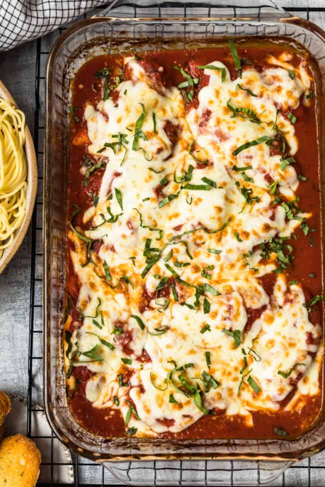

Easy Chicken Parmesan

Description
This dish is an easy take on a delicious classic, and it’s only five ingredients. It’s paired up with spaghetti for a complete meal, just add bread and salad! It looks fantastic with minimal effort, and it’s great for when you have guests too.
Ingredients
- 1 16 ounce package dry spaghetti, cooked & drained
- 32 ounces marinara sauce
- 12 boneless chicken tenders
- 2-3 cups shredded Mozzarella Cheese
- 1/4 cup grated Parmesan cheese
Steps
- Adjust an oven rack to the middle position, and heat the oven to 350°F
- Spray a casserole dish with nonstick cooking spray
- Place 1 cup sauce in the bottom of the casserole dish and set the chicken, evenly, on top.
- Pour the remaining sauce over the chicken
- Bake the chicken at 350°F for 30-45 minutes, or until the internal temperature of the chicken is 155°F. The baking time will depend on the size of the chicken breasts.
- While the chicken bakes, cook the spaghetti per package directions and drain.
- Remove the chicken from the oven and set the oven to BROIL.
- Place a small mound of Mozzarella cheese over each piece of chicken and sprinkle the Mozzarella with Parmesan. Return the chicken to the oven. Broil the chicken (watch closely) just until the cheese has melted and the internal temperature of the chicken registers 160-165°F with a meat thermometer.
- Transfer the chicken to a cooling rack and let rest 5 minutes before serving.
- Serve the chicken and sauce over a bed of cooked spaghetti
- Enjoy!